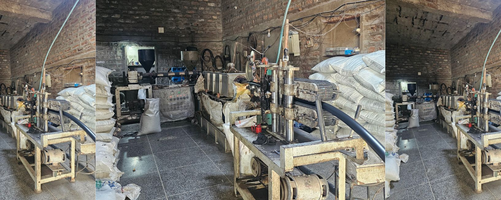
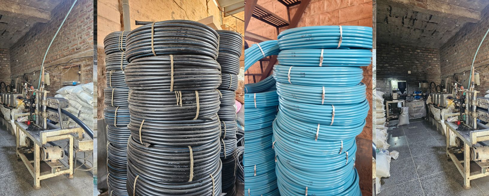
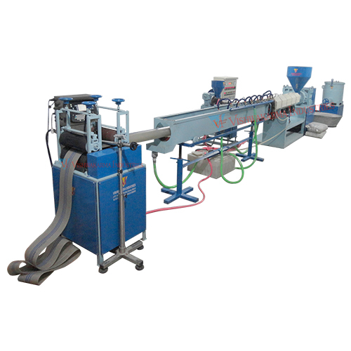
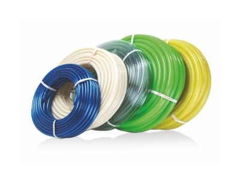

We proudly operate three advanced manufacturing units located strategically to serve diverse market demands. Each factory is equipped with high-efficiency production lines and managed by skilled professionals dedicated to maintaining consistent quality and timely output. These facilities are designed to handle large-scale production of plastic garden pipes while ensuring environmental responsibility and safety standards. Our factories not only increase capacity but also allow us to innovate rapidly and meet growing customer needs across India and beyond. Every image of our facility reflects our investment in excellence and a commitment to industrial leadership.

Raw materials are carefully selected and tested for quality assurance before production begins.Our plastic garden pipe manufacturing process is a well-orchestrated sequence of precision and innovation. It begins with the mixing of raw materials which are then melted and extruded through high-tech molds to create pipes of various diameters and strengths. The pipes are then cooled, cut to size, and rigorously tested for durability, flexibility, and resistance. To ensure long-lasting performance, UV stabilization and quality coloring agents are added. Each stage of production is closely monitored by experienced technicians using real-time quality control systems, guaranteeing that only the finest pipes reach the market.

Materials are melted and shaped into pipe structures using high-grade extrusion machinery.Our plastic garden pipe manufacturing process is a well-orchestrated sequence of precision and innovation. It begins with the mixing of raw materials which are then melted and extruded through high-tech molds to create pipes of various diameters and strengths. The pipes are then cooled, cut to size, and rigorously tested for durability, flexibility, and resistance. To ensure long-lasting performance, UV stabilization and quality coloring agents are added. Each stage of production is closely monitored by experienced technicians using real-time quality control systems, guaranteeing that only the finest pipes reach the market.

Pipes undergo cooling and sizing to achieve precise dimensions and durability.Our plastic garden pipe manufacturing process is a well-orchestrated sequence of precision and innovation. It begins with the mixing of raw materials which are then melted and extruded through high-tech molds to create pipes of various diameters and strengths. The pipes are then cooled, cut to size, and rigorously tested for durability, flexibility, and resistance. To ensure long-lasting performance, UV stabilization and quality coloring agents are added. Each stage of production is closely monitored by experienced technicians using real-time quality control systems, guaranteeing that only the finest pipes reach the market.

Final products are tested, packed, and labeled for delivery to distributors across India.Our plastic garden pipe manufacturing process is a well-orchestrated sequence of precision and innovation. It begins with the mixing of raw materials which are then melted and extruded through high-tech molds to create pipes of various diameters and strengths. The pipes are then cooled, cut to size, and rigorously tested for durability, flexibility, and resistance. To ensure long-lasting performance, UV stabilization and quality coloring agents are added. Each stage of production is closely monitored by experienced technicians using real-time quality control systems, guaranteeing that only the finest pipes reach the market.


We use a wide array of advanced machinery including extruders, cooling baths, haul-off machines, pipe cutters, and coil winders. Our automated systems ensure high precision with minimal waste, helping us maintain efficiency and quality across batches. From raw material feeding to finished coiling, each step is managed through PLC-controlled systems. Our investment in modern technology not only boosts productivity but also enables custom manufacturing for varied applications. These machines, along with a highly trained workforce, are the backbone of our robust and scalable operations..

A unique aspect of our production is the utilization of polymers derived from road stone aggregates and other reinforced compounds. These raw materials are not only highly durable but also cost-efficient, making them ideal for manufacturing robust plastic garden pipes. We source our materials from verified suppliers and conduct rigorous testing before they are used in the production cycle. The combination of road stone strength and flexible polymers helps us produce pipes that can withstand pressure, temperature variations, and rough handling—making them perfect for domestic as well as agricultural use.
We are a pipewholesaling company committed to quality and customer satisfaction.
G-1-45A Mandore Industrial Area, 9 mile.
Jodhpur, Rajasthan-342304
ranjanaplastic05@gmail.com
+91 7023007733
+91 9829987654